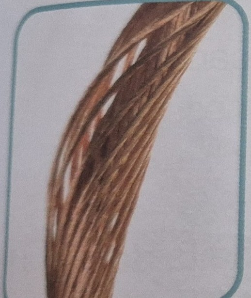
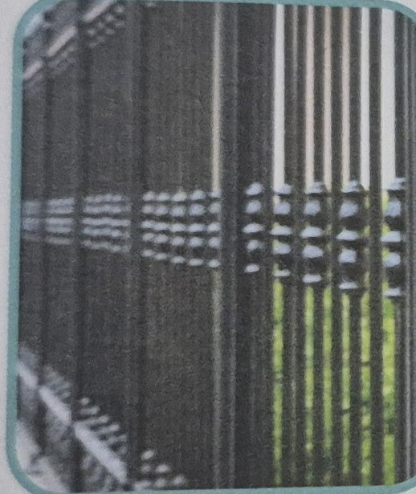

<!doctype html>
<html lang="pt-BR">
<head>
<meta charset="utf-8">
<meta name="viewport" content="width=device-width,initial-scale=1,viewport-fit=cover">
<title>Da natureza ao produto — Jogos do 3º ano</title>
<link rel="preconnect" href="https://fonts.googleapis.com">
<link rel="preconnect" href="https://fonts.gstatic.com" crossorigin>
<link href="https://fonts.googleapis.com/css2?family=Baloo+2:wght@600;700;800&family=Nunito:wght@400;600;700;800&display=swap" rel="stylesheet">
<link rel="stylesheet" href="../jogo-kit.css">
<script src="../jogo-kit.js"></script>   <!-- clássico, no head: define os componentes antes do corpo -->
<style>
/* ===== ajustes locais do jogo "Da natureza ao produto" (não altera o jogo-kit.css) ===== */
.alvo .num{font-family:var(--font-display);font-weight:800;font-size:2.6rem;line-height:1;color:var(--acc)}
.alvo .frase{font-weight:800;font-size:.98rem;margin:0;text-align:left}
.alvo .frase:empty{display:none}
.peca .nome{max-width:230px;text-align:left;font-size:.95rem;line-height:1.25}
.bandeja{margin-top:4px}
/* apoio visual: as duas fotos do livro (fios de cobre e portão de ferro) */
.apoio{display:flex;gap:14px;justify-content:center;flex-wrap:wrap;margin:10px 0 2px}
.apoio figure{margin:0;text-align:center}
.apoio img{width:130px;height:92px;object-fit:cover;border-radius:12px;border:2px solid var(--line)}
.apoio figcaption{font-weight:700;font-size:.9rem;margin-top:4px}
</style>
</head>
<body>
<main id="app"></main>
<script>
(function () {
  'use strict';

  /* 🌎 Da natureza ao produto — ordenar 4 passos nos espaços numerados 1 a 4.
     Base: livro p. 90 e 91 (extrativismo mineral). Vocabulário de resumos/min-90-91.md:
       os minerais levam milhões de anos para se formar; são extraídos da natureza;
       diminuem na natureza; viram produtos de uso cotidiano (fios, fogão).
     Regras TEA: 1 instrução por tela, 4 peças, sem cronômetro, erro mostra a frase
     do passo certo, o alvo certo brilha e a peça continua selecionada. */

  const app = document.getElementById('app');
  const ID = 'min-natureza';
  const TOTAL = 4;

  const PASSOS = {
    '1': { nome: 'Os minerais levam milhões de anos para se formar.', msg: 'Os minerais levam milhões de anos para se formar.' },
    '2': { nome: 'Os minerais são extraídos da natureza.',            msg: 'Os minerais são extraídos da natureza.' },
    '3': { nome: 'Os minerais diminuem na natureza.',                 msg: 'Os minerais diminuem na natureza.' },
    '4': { nome: 'Os minerais viram produtos, como fios e fogão.',    msg: 'Os minerais viram produtos, como fios e fogão.' }
  };

  const INSTRUCAO = 'Ponha na ordem: da natureza até o produto.';
  const DICA = 'Arraste o passo para o número certo. Ou toque no passo e depois no número.';
  const FRASE_CHAVE = 'Os minerais levam milhões de anos para se formar. Por isso, ao serem extraídos, diminuem na natureza.';

  let errados = {};          // passos que já erraram (não contam como acerto de primeira)
  let feitas = 0;            // peças encaixadas
  let primeira = 0;          // acertos de primeira (0 a 4) → estrelas
  let brilhoTimer = null;
  let feed = null, topo = null, barra = null;

  /* ---------- pedaços de tela ---------- */
  function rodape() {
    return '<p class="rodape"><a href="index.html">← Todos os jogos do tópico</a> · <a href="../index.html">← Todos os tópicos</a> · <a href="../../index.html">← Treino</a></p>' +
      '<details class="detalhes"><summary>Créditos das imagens</summary><ul>' +
        '<li>Fotos do livro didático, p. 90 e 91 (uso escolar): fios de cobre e portão de ferro.</li>' +
        '<li>Ícones Twemoji, CC-BY 4.0.</li>' +
      '</ul><p>' + FRASE_CHAVE + '</p></details>';
  }

  function alvoHtml(id) {
    return '<div class="alvo" data-id="' + id + '" role="button" tabindex="0" aria-label="Número ' + id + '">' +
        '<span class="num" aria-hidden="true">' + id + '</span>' +
        '<p class="frase" data-frase></p>' +
        '<div class="encaixados" data-encaixados></div>' +
      '</div>';
  }

  function pecaHtml(id) {
    const p = PASSOS[id];
    return '<div class="peca" data-id="' + id + '" data-alvo="' + id + '" data-msg="' + JogoKit.esc(p.msg) + '"' +
      ' data-tent="0" role="button" tabindex="0" aria-label="Passo: ' + JogoKit.esc(p.nome) + '">' +
        '<span class="nome">' + JogoKit.esc(p.nome) + '</span>' +
      '</div>';
  }

  /* ---------- telas ---------- */
  function montar() {
    errados = {};
    feitas = 0;
    primeira = 0;

    const ids = JogoKit.embaralhar(['1', '2', '3', '4']);   // bandeja embaralhada a cada partida

    app.innerHTML =
      '<jogo-topo icone="🌎" titulo="Da natureza ao produto" contador="0/' + TOTAL + '" rotulo-voltar="← Fases"></jogo-topo>' +
      '<barra-progresso valor="0" total="' + TOTAL + '"></barra-progresso>' +
      '<section class="card">' +
        '<fala-botoes texto="' + JogoKit.esc(INSTRUCAO) + '"></fala-botoes>' +
        '<p class="hint">' + JogoKit.esc(DICA) + '</p>' +
        '<div class="apoio">' +
          '<figure><figcaption>Fios de cobre</figcaption></figure>' +
          '<figure><figcaption>Portão de ferro</figcaption></figure>' +
        '</div>' +
      '</section>' +
      '<section class="card">' +
        '<div class="alvos">' + ['1', '2', '3', '4'].map(alvoHtml).join('') + '</div>' +
        '<div class="bandeja" data-bandeja aria-label="Passos">' + ids.map(pecaHtml).join('') + '</div>' +
        '<p class="feed" data-feed aria-live="polite"></p>' +
      '</section>' +
      rodape();

    feed = app.querySelector('[data-feed]');
    topo = app.querySelector('jogo-topo');
    barra = app.querySelector('barra-progresso');

    app.querySelectorAll('.peca').forEach(function (peca) {
      JogoKit.arrasto.ligar(peca, colocar, aoSelecionar);
    });
    app.querySelectorAll('.alvo').forEach(function (alvo) {
      JogoKit.arrasto.ligarAlvo(alvo, colocar);
    });

    subir();
  }

  function reiniciar() { montar(); }   // montar() já volta ao topo

  function subir() {
    try { window.scrollTo(0, 0); } catch (e) {}
  }

  /* ---------- ações ---------- */
  function colocar(peca, alvo) {                 // usado pelo arrasto e pelo modo toque
    if (!peca || !alvo || peca.dataset.feita) return;
    if (alvo.dataset.id === peca.dataset.alvo) acertar(peca, alvo);
    else errar(peca);
  }

  function aoSelecionar() { /* nada: a peça selecionada continua valendo depois do erro */ }

  function acertar(peca, alvo) {
    const p = PASSOS[peca.dataset.id];
    peca.dataset.feita = '1';
    peca.classList.remove('sel');
    peca.classList.add('encaixada');
    JogoKit.arrasto.limpar();

    const caixa = alvo.querySelector('[data-encaixados]');
    if (caixa) caixa.appendChild(peca);
    alvo.classList.remove('brilho');
    alvo.classList.add('feito');
    const frase = alvo.querySelector('[data-frase]');
    if (frase) frase.textContent = p.msg;
    alvo.setAttribute('aria-label', 'Número ' + alvo.dataset.id + ': ' + p.msg);

    feitas++;
    if (!errados[peca.dataset.id]) primeira++;

    feed.className = 'feed ok';
    feed.textContent = '✓ ' + p.msg;
    JogoKit.falar(p.msg);
    atualizar();

    if (feitas >= TOTAL) terminar();
  }

  function errar(peca) {
    const p = PASSOS[peca.dataset.id];
    errados[peca.dataset.id] = true;
    peca.dataset.tent = String((parseInt(peca.dataset.tent, 10) || 0) + 1);

    const certo = app.querySelector('.alvo[data-id="' + peca.dataset.alvo + '"]');
    if (certo) {
      certo.classList.add('brilho');
      if (brilhoTimer) clearTimeout(brilhoTimer);
      brilhoTimer = setTimeout(function () { certo.classList.remove('brilho'); }, 2000);
    }

    feed.className = 'feed bad';
    feed.textContent = '✗ ' + p.msg;
    JogoKit.falar(p.msg);
  }

  function atualizar() {
    if (topo) topo.contador = feitas + '/' + TOTAL;
    if (barra) barra.atualizar(feitas, TOTAL);
  }

  function terminar() {
    JogoKit.progresso.melhor(ID, primeira);      // melhor = acertos de primeira
    const msg = primeira === TOTAL
      ? 'Muito bem! Você pôs os 4 passos na ordem certa.'
      : 'Você pôs os 4 passos na ordem: da natureza até o produto.';
    app.innerHTML =
      '<tela-fim icone="🌎" titulo="Da natureza ao produto" estrelas="' + primeira + '" total="' + TOTAL + '"' +
        ' resumo="Tudo na ordem certa!" msg="' + JogoKit.esc(msg) + '"></tela-fim>' +
      rodape();
    subir();
  }

  /* ---------- eventos dos componentes ---------- */
  document.addEventListener('fim', function (e) {
    if (e.detail && e.detail.acao === 'denovo') reiniciar();
    else location.href = 'index.html';
  });
  document.addEventListener('voltar', function () {
    location.href = 'index.html';
  });

  montar();
})();
</script>
</body>
</html>
